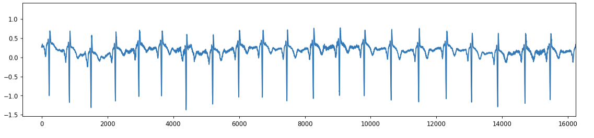
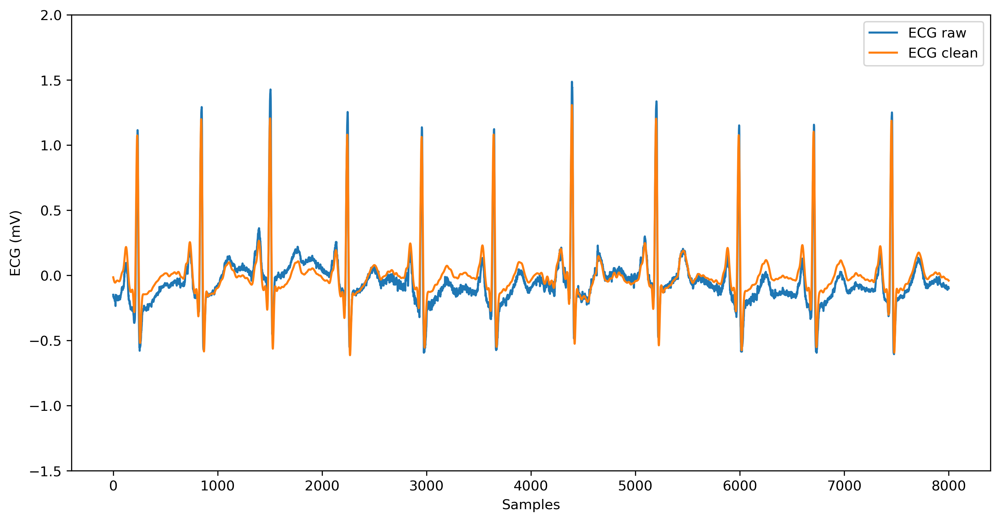
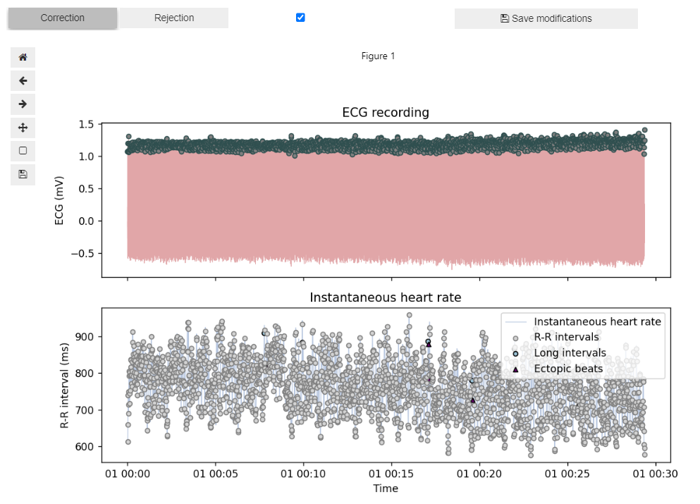
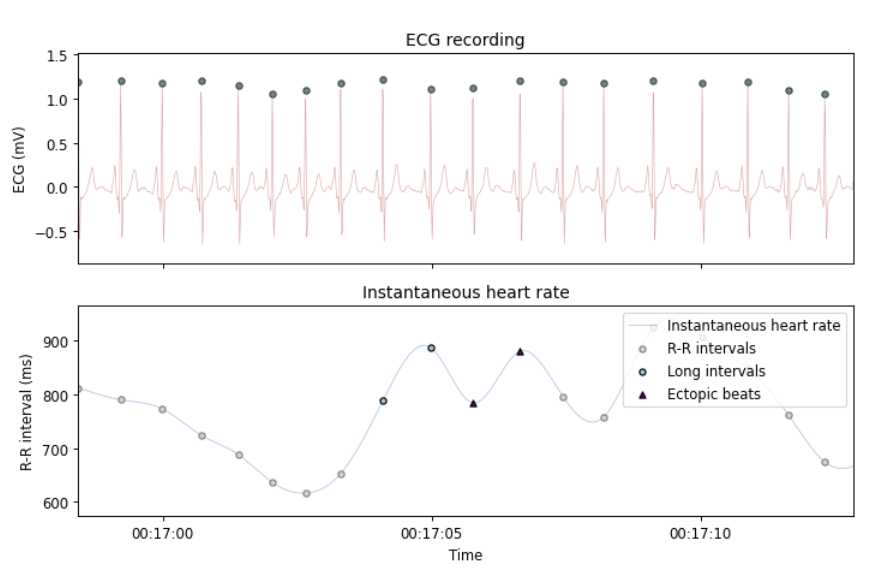
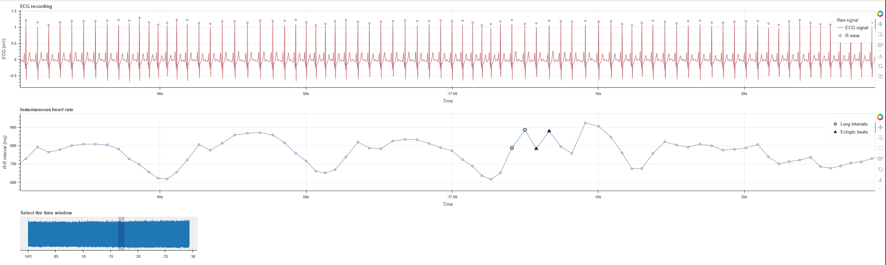
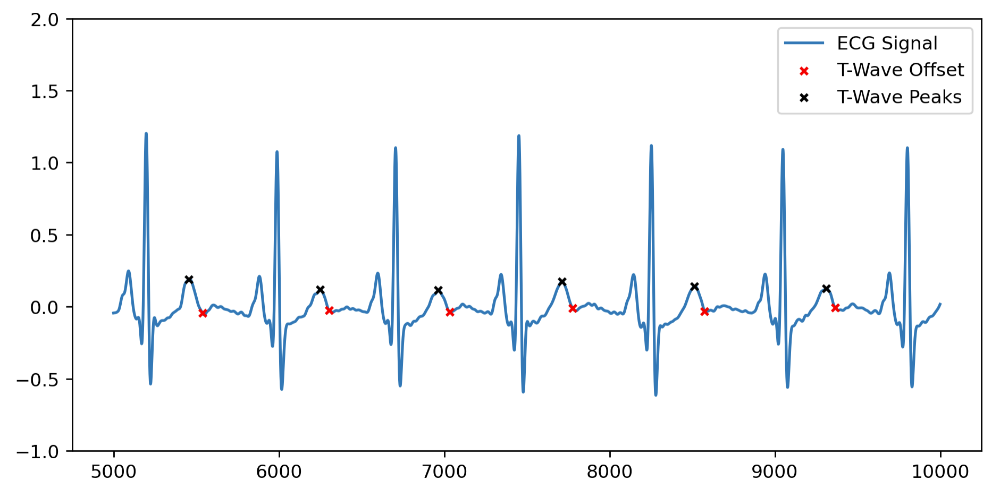
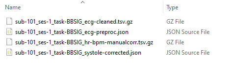

ECG preprocessing: ecg_preproc.ipynb#
This step-by-step tutorial will walk you through how to use the Jupyter notebook for preprocessing raw ECG data, developed as part of the Brain-Body Analysis Special Interest Group (BBSIG). You can find this pipeline under the name: ecg_preproc.ipynb.
Never used a Jupyter notebook before?
If you have never used a Jupyter notebook before, visit our setup instructions in the FAQs. Especially if you are planning to perform the manual PPG peak correction, we recommend following the instructions to run this pipeline locally in your IDE of choice (e.g., VS Code, PyCharm).
Before starting: multiple participants or one at a time?
Given the code-chunk nature of the Jupyter notebook, especially if you plan to use the interactive visualization for the manual correction of R-peaks (via Systole’s Editor), we recommend you run the ECG preprocessing pipeline one participant at a time. The participant ID is included in Sect. 1 during data import, so you can specify the ID of each participant you want to preprocess and then proceed to run the entire pipeline.
# Define the participant ID
# If manual R-peak correction (Sect. 4) is selected, run this notebook one participant at a time
participant_ids = ['101'] # Adjust as needed: it should correspond to <ID> of 'sub-<ID>' in BIDS format
The current version of the pipeline is primarily intended for manual inspection and correction of individual participants. As such, it does not yet support automatic looping over multiple participants. We are currently working on a new version that will allow you to do so.
Pipeline structure#
The following steps are included in the ECG preprocessing pipeline:
-
Data import and conversion: import the BIDS-compliant
_physio.tsv.gzand_physio.jsonfiles containing the raw ECG signal and its metadata, then convert them into appropriate formats for later processing stages. Optional step to rescale ECG signal (e.g., by 0.001 with BrainAmp ExG acquired via LSL) if needed. -
(Optional) ECG flipping and filtering: if needed, flip the ECG signal using NeuroKit2’s
ecg_invert()function, and/or clean the ECG signal using NeuroKit2’ssignal_clean()function (50 Hz powerline filter, and 0.5-30 Hz band-pass 4th order Butterworth filters). -
R-peak detection: custom function to detect R-peaks using either Systole’s
ecg_peaks()with 'sleepecg' methods (default) or NeuroKit2’snk.ecg_peaks()with 'neurokit' method. Additionally, the user can choose to run automated artifact correction. Uncorrected (and automatically corrected) R-peak indices are saved. -
Manual R-peak correction: manually identify and correct mis-detected R-peaks and/or label bad segments using Systole’s
Editor(which saves acorrected.json filein thederivativesfolder). -
(Optional) interactive visualization: plot an interactive visualization of ECG signal with R-peaks and/or instantaneous heart rate using Systole’s
plot_raw()function. Plots can either be shown inside the notebook (ifplot_within_notebookis set toTrue) or opened in a browser as HTML files. -
QRS delineation and T-wave detection: delineate the onsets, peaks and offsets of main QRS features, including T-wave peaks, using NeuroKit2
ecg_delineate()function with 'dwt' method. -
Data output: export the
_ecg-cleaned.tsv.gz(optional) and_ecg-preproc.jsonfiles in BIDS-compliant format for each subject in/derivatives/ecg-preproc/sub-xx/. Additionally, an_hr-bpm-{correction_type}.tsv.gzfile (optional) can be saved with interpolated HR (in BPM).
Settings: optional pipeline steps#
This section defines a series of variables that can be set to True to include the corresponding pipeline steps:
Variable Name |
Function |
|---|---|
ecg_scale (bool) ecg_scale_factor (numeric) |
ECG re-scaling (Sect. 1): scales the ECG signal by a user-defined factor (e.g., 0.001 for BrainAmp ExG acquired via LSL) specified under ecg_scale_factor. For reference, ECG is canonically measured in millivolts (mV), with R-peak amplitude on average ≤2.0/2.5 mV. |
ecg_flip (bool) |
ECG flipping (Sect. 2): checks whether an ECG signal is inverted, and if so, corrects for this inversion using NeuroKit2’s nk.ecg_invert() function. Defaults to False. If you are unsure whether the original ECG signal is inverted or not, we recommended setting it to True. |
ecg_filter (bool) |
ECG filtering (Sect. 2): cleans the ECG signal by applying a 50 Hz powerline filter + 0.5-30 Hz band-pass 4th order Butterworth filter using NeuroKit2’s nk.signal_filter() function. |
manual_correct (bool) |
Manual correction of R-peaks (Sect. 4): activates UI for manual correction of extra peaks, missed peaks, and falsely detected peaks, using Systole's Editor. The UI can also be used to annotate bad segments. Saves a JSON file with the corrected peaks and bad segments. |
interactive_ecg_plot (bool) |
Interactive plot of ECG signal and R-peaks (Sect. 5): displays an interactive plot of the raw ECG signal with R-peak locations and heart rate using Systole's plot_raw() function. |
hr_interpol (bool) |
Save HR interpolation (Sect. 7): exports interpolated heart rate (HR) values in BPM using Systole's utils.heart_rate(), as a TSV file with same sampling rate as original recording. |
1. Data import and conversion#
This section imports the physiological data and metadata from the _physio.tsv.gz and sidecar _physio.json files in the BIDS directory and extracts the ECG data into a DataFrame (ecg_df) and numpy array (ecg_arr). In detail:
- Define participants and BIDS file paths: first, the user specifies the participant ID(s) in the
participant_idslist. If planning to conduct manual corrections, it is recommended to include only one participant at a time. The user must specify the root directory of BIDS-compliant raw data storage (wd), as well as the mandatory (i.e., task label, datatype) and optional (i.e. session label) BIDS entities (in the formattask-<label>,<datatype>andses-<label>, respectively). These will be used to create a base filename according to BIDS conventions (e.g.,sub-<ID>{_ses-<label>}_task-<label>) and a base BIDS directory including subject, session (optional) and datatype (e.g.,'sub-<ID>/[ses-<label>/]<datatype>/'). - Check for
_physio.tsv.gzand_physio.jsonfiles: ensures the raw ECG signal and metadata files for the specified participant are present. If either file is missing, the participant is skipped with a warning message. - Extract and parse metadata: reads the JSON file to extract key information, including sampling frequency (saved as
sfreq) and column names used to recognize the ECG data column when reading the TSV.GZ file (expects a column named'cardiac'according to BIDS conventions). Additionally reads and decompresses the TSV.GZ file into a pandas DataFrame (physio_df) using the extracted column names.- The
'cardiac'column storing raw ECG data is renamed'ecg'for easier referencing. - If
ecg_scaleis set toTrue, the ECG data is re-scaled according to the specifiedecg_scale_factorand then stored in a DataFrame (ecg_df) and numpy array (ecg_arr).
- The
- Define the derivatives path for ECG preprocessed data storage: defines and creates the directory for storing ECG preprocessed data, i.e.
derivatives/ecg-preproc/sub-<ID>/....
Please keep in mind that data import parameters must be adapted if your data and/or directories are not BIDS-compliant (check how in the Organize your BIDS folders section).
Which BIDS entities should be specified for data import?
This is what the setup of mandatory and optional BIDS entities could look like to load a physio data file called sub-101_ses-1_task-BBSIG_physio.tsv.gz for a given participant called sub-101, with one session (ses-1), and datatype beh, stored in the following BIDS-compliant raw data structure C:\YourBIDSFolder\sub-101\ses-1\beh\. Unfortunately, in its current version, the pipeline only allows users to process one participant and one session at a time. If your data contains multiple sessions, the session_idx variable must be changed every time.
# Define the participant ID
# If manual R-peak correction (Sect. 4) is selected, run this notebook one participant at a time
participant_ids = ['101'] # Adjust as needed: it should correspond to <ID> of 'sub-<ID>' in BIDS format
# Specify the main directory of data storage (containing BIDS-compliant raw data)
wd = r'C:\YourBIDSFolder' # change with the directory of data storage
# Mandatory: BIDS entities (task, datatype)
task_name = 'BBSIG' # <label> of 'task-<label>' used for file naming in BIDS format
datatype_name = 'beh' # datatype used for corresponding directory in BIDS format (e.g., 'beh', 'eeg', 'func')
physio_name = 'physio' # physio data specification in BIDS format
# Optional: BIDS entities (session)
session_idx = '1' # <label> of 'ses-<label>' in BIDS format, if available; otherwise, set to None
'run-<label>' or 'recording-<label>'), you can easily add them by changing the corresponding bids_base_fname variable, as this will only impact file naming but not folder structure. This base BIDS filename will be inherited by all data import and export functions. You can read more about mandatory and optional entities in our short BIDS glossary.
# If you have additional BIDS entities (e.g., 'run' or 'recording') you can change the bids_base_fname variable accordingly
bids_base_fname = f'{subj_id}_ses-{session_idx}_task-{task_name}_run-{run_idx}_recording-{rec_name}'
The main output from this section is a numpy array called ecg_arr, which includes the raw ECG signal (ideally, in mV), as shown below. This array is the basis of our ECG preprocessing: it will be cleaned in Sect. 2 via filtering options (only if ecg_filter is set to True) or the raw form will be used for R-peak detection (Sect. 3).
Example structure of ecg_arr:
[-0.14894234 -0.16286522 -0.16502208 -0.16208112 -0.1652874 -0.16653465
-0.17329076 -0.17646152 -0.1737763 -0.17040654 -0.17478665 -0.1772177
-0.17397389 -0.18629727 -0.18957191 -0.1972182 -0.1962805 -0.19119135
-0.19838545 -0.19189452]
2. (Optional) ECG flipping & filtering#
This section includes a series of optional preprocessing steps for ECG signal correction and cleaning. In detail:
2a. ECG flipping#
If the variable ecg_flip is set to True in the optional pipeline steps (see settings above - defaults to False), this part of the code will:
- Check whether an ECG signal is inverted, and if so, correct for this inversion using NeuroKit2’s
nk.ecg_invert(). - Store the resulting flipped ECG signal
ecg_invertedasecg_arr, if the original signal is found to be inverted, so that the next steps can be conducted on the correctly oriented signal. - Print a summary indicating whether the original ECG signal was found to be inverted and subsequently corrected.
# Flip the ECG signal if inverted - set force to "False" checks whether the signal is inverted and, if so, flips it
# If `force` is set to `True`, inversion of the signal is applied regardless of whether it is detected as inverted.
# If `show` is set to `True`, a plot of the original and inverted ECG signal is shown
ecg_inverted, is_inverted = nk.ecg_invert(ecg_arr, sampling_rate=sfreq, show=False, force=False)
ecg_arr = ecg_inverted.copy()
Unsure whether your ECG signal is inverted?
If unsure whether your original ECG signal is inverted, we recommend setting ecg_flip to True. Using nk.ecg_invert() with the argument force=False will conduct a first internal check of the inversion, and only apply the flipping if necessary.
For reference, this is what an originally inverted ECG signal (i.e., R-peaks pointing down) would look like:

2b. ECG filtering#
If the variable ecg_filter is set to True in the optional pipeline steps (see settings above - defaults to True), this part of the code will:
- Apply filtering to the ECG signal using NeuroKit2’s
nk.signal_filter()function. Filters include a 50 Hz powerline filter, plus 0.5 Hz high-pass and 30 Hz low-pass 4th order Butterworth filters. - Store the resulting clean ECG signal as the array
ecg_clean.
# Apply filtering to the ECG signal: 50 Hz powerline filter,
# 0.5 Hz 4th Butterworth high-pass filter, 30 Hz 4th Butterworth low-pass filter
ecg_clean = nk.signal_filter(ecg_arr, sampling_rate=sfreq, lowcut=0.5, highcut=30,
method='butterworth', order=4, powerline=50, show=False)
For reference, this is how the original raw ECG signal (blue; corresponding to the data points in ecg_arr) compares to the cleaned ECG signal (orange; corresponding to the data points in ecg_clean) after applying these filters:

Warning
If ECG filtering is not enabled, please keep in mind that all the subsequent steps (from Sect. 3 onwards) have to be conducted on the original raw ECG signal (ecg_arr). For reference, some algorithms for R-peak detection and QRS delineation perform better on clean vs. raw ECG signal.
3. R-peak detection#
This section performs R-peak detection on the provided ECG signal and optionally applies automated R-peak correction based on the chosen method. In detail, this section:
- Defines a custom function
detect_rpeaks()for selecting the preferred method of R-peak extraction based on a BBSIG internal validation:- The default is Systole’s
ecg_peaks(method='sleepecg'), as it performed the most consistently across our various tests. - Otherwise, the NeuroKit2’s method
nk.ecg_peaks(method='neurokit')can be selected.
- The default is Systole’s
- If
correct_artifactsis enabled, the code will perform automatic detection and correction of irregularities like missed or extra beats.- For
'sleepecg', the fuctionsystole.correction.correct_peaks()is used; - For
'neurokit', the correction is performed by the argument built in the NeuroKit2 R-peak detection function:nk.ecg_peaks(correct_artifacts=True).
- For
The function returns a dictionary with corrected and uncorrected R-peak indices, R-peak boolean arrays, and information about the detection method and artifact corrections (see the detect_rpeaks() function documentation within the Jupyter notebook for more info).
Here is an example of the usage of detect_rpeaks() with default options. If filtering was performed, we recommend using ecg_clean as input, then specify sfreq and set correct_artifacts to True (default). Since no method argument is provided in the example, the function uses the default method 'sleepecg’ from the Systole package.
# Perform the R-peak detection with the chosen method
# Specify "ecg_clean" if ecg signal filtering was applied, otherwise "ecg_arr"
rpeaks_dict = detect_rpeaks(signal=ecg_clean, sfreq=sfreq, correct_artifacts=True)
Here is an example output for rpeaks_dict generated with the above settings:
{'rpeaks_idx': array([ 230, 842, 1501, ..., 1761039, 1761633, 1762210],
dtype=int64),
'rpeaks_bool': array([False, False, False, ..., False, False, False]),
'info': {'method_peaks': 'sleepecg',
'automated_correction': 'True',
'ECG_R_Peaks': array([ 230, 842, 1501, ..., 1761039, 1761633, 1762210],
dtype=int64),
'ECG_R_Peaks_Uncorrected': array([ 230, 842, 1501, ..., 1761039, 1761633, 1762210],
dtype=int64),
'ectopic_idx_uncorr': array([ 602, 1314, 1315, 1518, 2005], dtype=int64),
'long_idx_uncorr': array([ 590, 752, 1312, 1313, 1516, 1710, 1880], dtype=int64),
'short_idx_uncorr': array([], dtype=int64),
'extra_idx_uncorr': array([], dtype=int64),
'missed_idx_uncorr': array([], dtype=int64),
'info_correction': {'extra': 0,
'missed': 0}}}
4. R-peak manual correction#
4a. Manual R-peak correction: interactive plot#
If enabled via manual_correct, this section triggers the interactive manual correction of R-peak locations and identification of noisy segments in the ECG signal using Systole’s Editor class. Both the raw ECG signal and instantaneous heart rate are plotted to check for artifacts (e.g., long/short beats, ectopic beats). This interactive plot features a "Correction" mode for deleting peaks or adding them at the local maxima within selected segments, as well as a "Rejection" mode for marking selected segments as ‘bad’.
This is what the UI for manual R-peak correction looks like when importing your clean ECG signal and R-peaks locations:


You can use the tools on the left side to zoom into the signal, scroll along the time axis, or go the previous or next visualization step.
- With Correction mode selected:
- Click and drag the left mouse button to select a segment where all the peaks should be removed.
- Click and drag the right mouse button to select a segment where a peak will be added at the local maximum.
- With Rejection mode selected:
- Click and drag the right mouse button to select a segment that should be marked as a bad segment. This will be saved as a pair of indices indicating the onset and offset of the bad segment.
You can read more about how manual correction works in the Systole official documentation: Working with BIDS folders - Using the Editor to inspect raw signal.
Bug: recurrent TypeError using Systole's Editor
Just ignore the TypeError: Figure.set_tight_layout() missing 1 required positional argument: 'tight' error that will be printed every manual correction or bad segment annotation you perform using Systole's Editor.
4b. Manual R-peak correction: data saving#
Once done with manual correction in the UI, save the results by running the code block in this section. The corrected R-peak locations and bad segment indices are saved to a JSON file (_systole-corrected.json) in the /derivatives/ecg-preproc/sub-<label>/ folder for further processing and analysis.
Warning
Make sure that you run the editor.save() section (below) only after completing your manual R-peak correction. This will save the output _systole-corrected.json file with the information about the new R-peaks locations and bad segments idx pairs.
# Execute only when manual peak correction is done
if manual_correct:
editor.save()
Bug: Is your sampling frequency different from 1000 Hz? Incorrect Editor timescale
Caution when using Systole’s Editor for manual correction with sampling rates other than 1000 Hz! Despite specifying the sfreq in the Editor’s arguments, the function appears to be using a default sampling frequency of 1000 Hz to calculate the time window of the interactive visualization. As a result, the Editor might display your ECG signal in an incorrect time scale, shorter or longer than its actual duration. Despite this bug in the visualization, the manually corrected R-peak and bad segment indices are saved correctly in the output _systole-corrected.json file.
- For example, if your
sfreqis 500 Hz and your original ECG signal is 10 min long, the UI will plot the signal with a default sampling frequency of 1000 Hz (i.e. as if 1000 samples were included in 1 sec of recording). This squeezes the timescale of the ECG signal into half its length (i.e., 5 min) and plots equally incorrect RR interval durations for the instantaneous HR, e.g., each heart beat lasting 300 or 400 ms. - A potential temporary solution could be to resample your data to 1000 Hz.
5. (Optional) interactive visualization#
If interactive_ecg_plot is set to True, this section provides an interactive visualization of the ECG signal with R-peaks and/or instantaneous HR using Systole plot_raw(). If plot_within_notebook is set to True, the interactive plot will be rendered within the notebook using Bokeh as the backend, otherwise it will be opened as an HTML file within the browser.
Within this interactive visualization, it is possible to scroll through the entire ECG recording as well as the instantaneous HR time series (in ms). The plot_raw() function also displays potential artifacts in the RR time series plot below by using different shapes and labels, e.g., ectopic beats, extra beats, long & short intervals.
Running this section will either plot within the notebook or open an HTML file that looks like this:

Note
If manual correction was performed, the manually corrected R-peaks are imported from _systole-corrected.json file and displayed in this interactive visualization. Otherwise, the automatically corrected R-peaks will be displayed.
6. QRS delineation and T-wave detection#
This section delineates the main features of the QRS complex, including the T-wave peak and T-wave offset. It utilizes the nk.ecg_delineate() function from NeuroKit2 to perform the QRS delineation. The default delineation method used is 'dwt' (Discrete Wavelet Transform). You can read more about it in the official NeuroKit2 documentation: Locate P, Q, S and T waves in ECG.
This section returns a binary array (qrs_bin) indicating the presence of various QRS complex events and a dictionary (qrs_idx) of the indices of QRS-peaks, QRS-onsets, and QRS-offsets. The following ECG features will be included:
- P-peaks, P-onsets, and P-offsets
- Q-peaks
- R-onsets (i.e., Q-onsets) and R-offsets (i.e., S-offsets)
- S-peaks
- T-peaks, T-onsets, and T-offsets
The resulting qrs_idx dictionary will be structured like this:
{'ECG_P_Peaks': [nan, 733, 1394, 2131, 2843, ...],
'ECG_P_Onsets': [nan, 710, 1367, 2105, 2818, ...],
'ECG_P_Offsets': [nan, 774, 1430, 2171, 2879, ...],
'ECG_Q_Peaks': [203, 816, 1476, 2214, 2926, ...],
'ECG_R_Onsets': [nan, 798, 1458, 2196, 2908, ...],
'ECG_R_Offsets': [277, 887, 1546, 2287, 3004, ...],
'ECG_S_Peaks': [258, 870, 1529, 2268, 2982, ...],
'ECG_T_Peaks': [501, 1105, 1763, 2499, 3195, ...],
'ECG_T_Onsets': [358, 1000, 1754, 2354, 3127, ...],
'ECG_T_Offsets': [532, 1139, 1803, 2558, 3221, ...]}
For reference, here is an example of T-wave offsets (red) and T-wave peaks (black), detected using 'dwt' (Discrete Wavelet Transform) implemented in NeuroKit2, plotted on the clean ECG signal:

7. Data output#
This section exports the ECG preprocessing output files in BIDS-compliant format for each subject in derivatives/ecg-preproc/sub-xx/.
7a. (Optional) Export raw and clean ECG data#
A custom function, save_ecg_cleaned(), saves the _ecg-cleaned.tsv.gz file with two columns: ecg_raw(the original ECG data) and ecg_cleaned (the filtered ECG signal, created by the optional filtering in Sect. 2, if ecg_filter is set to True). This ensures easy access for later stages of analysis and enhances reproducibility.
If ECG filtering was performed at the beginning, this section saves the _ecg-cleaned.tsv.gz file with two columns: the original ECG recording (ecg_raw) and the cleaned ECG signal with the applied filtering options (ecg_cleaned).
This is how the _ecg-cleaned.tsv.gz TSV file might look (after decompression):
ecg_raw ecg_cleaned
-0.148942 -0.014682
-0.162865 -0.018444
-0.165022 -0.022173
-0.162081 -0.025835
-0.165287 -0.029398
7b. Export main ECG preprocessing features#
A custom function, save_ecg_preproc(), saves the _ecg-preproc.json file with R-peak indices, QRS complex features, and bad segment indices.
rpeakscontains the following data:ECG_R_Peaks_Uncorrfor uncorrected R-peak indices;ECG_R_Peaks_AutoCorrfor auto-corrected R-peak indices, if either Systole'scorrect_peaks()or NeuroKit'snk.ecg_peaks(correct_artifacts=True)were used;ECG_R_Peaks_ManualCorrfor manually corrected R-peaks using Systole'sEditor.qrscontains data for delineated QRS complex features obtained using NeuroKit2’snk.ecg_delineate()function. Specifically:- P-peaks, P-onsets, and P-offsets
- Q-peaks
- R-onsets and R-offsets
- S-peaks
- T-peaks, T-onsets, and T-offsets
rr_scontains the RR interval time series (in seconds) created using Systole'sinput_conversion(output_type='rr_s'), based on the uncorrected, auto-corrected, or manually corrected R-peaks indices (if present).bad_segments, if present, contains index pairs indicating the onsets and offsets of ECG signal segments marked as "bad" using Systole'sEditor.infocontains metadata about the chosen R-peak detection procedures (e.g. method, artifact correction). Its structure changes depending on whether the 'sleepecg' or 'neurokit' method was applied.
This is the crucial final step of our BBSIG ECG preprocessing pipeline. It stores all the features that have been calculated so far, including: R-peak locations (uncorrected, automaticallly corrected, and/or manually corrected if present); QRS complex feature locations; RR interval time series (based on uncorrected, automatically corrected and/or manually corrected R-peaks if present), bad segment indices; metadata about the chosen R-peak detection method. These are all saved as lists of values (e.g., indices for rpeaks or seconds for rr_s) under the corresponding keys.
Below is an example of how different sections of the _ecg-preproc.json file could look:
{
"rpeaks": {
"ECG_R_Peaks_Uncorr": [ 230, 842, 1501, ...],
"ECG_R_Peaks_AutoCorr": [ 230, 842, 1501, ...],
"ECG_R_Peaks_ManualCorr": [ 230, 842, 1501, ...]
},
"qrs": {
"ECG_P_Peaks": [ null, 733, 1394, ...],
"ECG_P_Onsets": [ null, 710, 1367, ...],
"ECG_P_Offsets": [ null, 774, 1430, ...],
"ECG_Q_Peaks": [ 202, 815, 1475, ...],
"ECG_R_Onsets": [ null, 798, 1458, ...],
"ECG_R_Offsets": [ 277, 887, 1546, ...],
"ECG_S_Peaks": [ 257, 869, 1528, ...],
"ECG_T_Peaks": [ 501, 1105, 1763, ...],
"ECG_T_Onsets": [ 358, 1000, 1754, ...],
"ECG_T_Offsets": [532, 1139, 1803, ...]
},
"rr_s": {
"RR_s_Uncorr": [ 0.612, 0.659, 0.739, ...],
"RR_s_AutoCorr": [ 0.612, 0.659, 0.739, ...],
"RR_s_ManualCorr": [ 0.612, 0.659, 0.739, ...]
},
"bad_segments": [ 594607, 599229],
"info": {
"method_peaks": "sleepecg",
"automated_correction": "True",
"ectopic_idx_uncorr": [ 602 ],
"long_idx_uncorr": [ 590 ],
"short_idx_uncorr": [],
"extra_idx_uncorr": [],
"missed_idx_uncorr": [],
"info_correction": {
"extra": 0,
"missed": 0
}
}
}
7c. (Optional) Export interpolated HR (in BPM)#
A custom function, save_hr_interpol(), saves the interpolated heart rate (HR) values in BPM from the RR interval time series with the selected correction type (i.e., uncorr, autocorr or manualcorr) to a new file ending in _hr-bpm-{correction_type}.tsv.gz. Cubic interpolation is used by default. Please note that interpolated HR values before the first RR interval and after the last RR interval will be filled with NaN values.
Bug: Incorrect HR interpolation with Systole’s heart_rate() with sampling frequences other than 1000 Hz
We have identified a bug in Systole's heart_rate() function whenever the sfreq argument is set to any value other than the default 1000 Hz. The interpolated HR values in BPM are incorrectly scaled by the value of sfreq, leading to inaccurate results. For example, for an RR interval of 992 ms, which should correspond to 60.48 bpm, calling heart_rate(sfreq=500) returns an incorrectly interpolated HR of 30.24 bpm, exactly half the expected value. As a temporary fix, we keep the argument sfreq to its default (1000 Hz) when calling this function within the custom save_hr_interpol() block. This ensures that interpolated HR values remain correct regardless of the original ECG signal's sampling frequency.
We are waiting for an official fix from the maintainers of Systole. You can track the progress or read more about this bug here: opened issue on GitHub.
This is what the _hr-bpm-{correction_type}.tsv.gz file might look (after decompression) - note that the values shown do not include the NaN values before the first RR interval (which lasted 0.612 s):
hr_bpm_manualcorr
... ...
612 98.039216
613 98.038904
614 98.038548
615 98.038148
616 98.037704
Good job, your ECG preprocessing is done! 🥳#
If you enabled all optional steps, these are the files which will now be included in the derivatives/ecg-preproc/sub-<label>/ directory:
_ecg-preproc.json: stores the main ECG preprocessing features, including R-peak indices (uncorrected, auto-corrected, and manually corrected), QRS feature indices, RR time-series derived from the R-peak indices, and metadata about artifacts, bad segments, and correction._ecg-cleaned.tsv.gz: if you enabled the parameterecg_cleanin Sect. 2, stores the raw and cleaned ECG signal._systole-corrected.json: if you performed manual R-peak correction and saved its output, stores the Systole'sEditoroutput with manually corrected R-peaks and bad segment indices. See Sect. 4_hr-bpm-{correction_type}.tsv.gz: if you enabled the parameterhr_interpolin Sect. 6, stores the interpolated HR values in BPM.

What does the BIDS directory look like after running the ECG preprocessing pipeline?
Let's come back to the example BIDS directory from the beginning, where we wanted to preprocess the physio data for a given participant, sub-101, with one session (ses-1) and datatype beh. After running this ECG preprocessing pipeline, the BIDS structure should now include a derivatives/ecg-preproc folder with sub-folders for each participant, session (optional), and datatype. Within this last folder, the four main output files should be stored.
└─ YourBIDSFolder/
├─ derivatives/
│ └─ ecg-preproc/
│ ├─ sub-101/
│ │ └─ ses-1/
│ │ └─ beh/
│ │ ├─ `sub-101_ses-1_task-BBSIG_ecg-cleaned.tsv.gz` # optional
│ │ ├─ `sub-101_ses-1_task-BBSIG_ecg-preproc.json` # main output
│ │ ├─ `sub-101_ses-1_task-BBSIG_hr-bpm-manualcorr.tsv.gz` # optional
│ │ └─ `sub-101_ses-1_task-BBSIG_systole-corrected.json` # optional
│ ├─ sub-102/
│ └─ ...
├─ sub-101/
│ └─ ses-1/
│ └─ beh/
│ ├─ `sub-101_ses-1_task-BBSIG_physio.json`
│ └─ `sub-101_ses-1_task-BBSIG_physio.tsv.gz`
├─ sub-102/
└─ ...